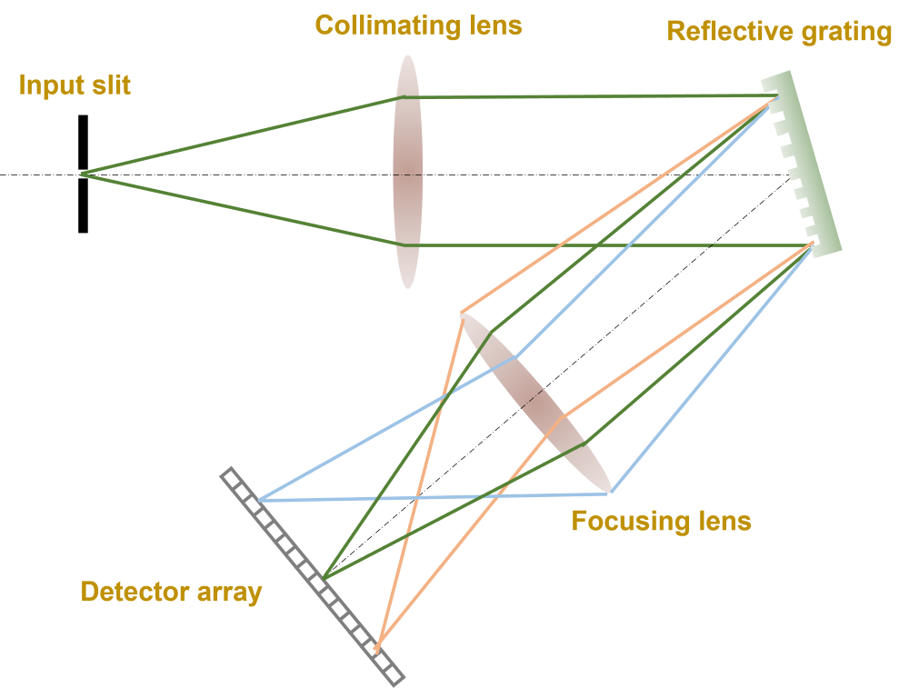
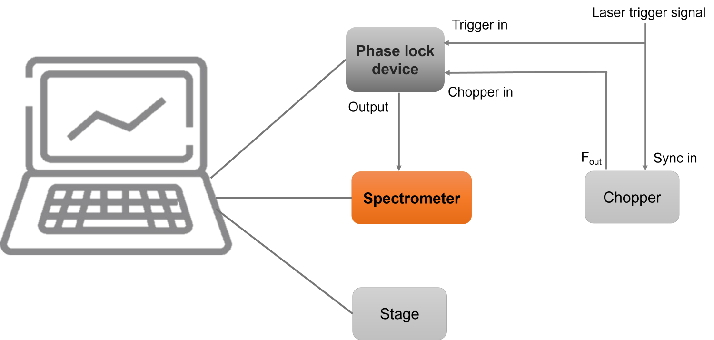

PulsearSpec
Designed for pump-probe experiments, with high collection efficiency and sensitivity.
Contact us to get a quote
This spectrometer is designed for transient absorption spectroscopy experiments. By using our phase lock setup to generate trigger signal for this spectrometer, it is very easy to separate the probe spectrum with and without the pump. This device features a USB port, used for power supply and connecting to a PC, enabling control through the LabVIEW software via this connection. The specially designed circuit board is optimized for high-speed processing. This allows for 16 bit A/D resolution with 10 M/s clock, the maximum line rate can go up to 4 kHz. Furthermore, the device's efficient low-power consumption design not only minimizes energy usage but also significantly enhances its longevity and reliability.

Spectrometer design
The spectrometer is superbly suited for transient absorption spectroscopy and experiments employing pump-probe techniques, including 2D Electronic Spectroscopy (2D ES), Transient Absorption Imaging (TAM). It proficiently differentiates between probe spectra in the presence or absence of pump pulses. Additionally, we offer a LabVIEW subVI for straightforward integration with your existing LabVIEW control software, enhancing its ease of use in various experimental setups.

Application idea for transient absorption experiments
| Name | Description |
|---|---|
| Detector | Hamamatsu S11639 |
| Grating | 600 g/mm, 500 nm blaze wavelength |
| Input fiber | 100 um in diameter |
| Collection lens | 100 mm focal length |
| Detector pixel size | 14 X 200 um |
| Line rate | 4 kHz (Max) |
| Dynamic range | 4000 |
| A/D resolution | 16 bit |
| Interface | USB 2.0 (Power source) |
| Sychronization | Internal and External |